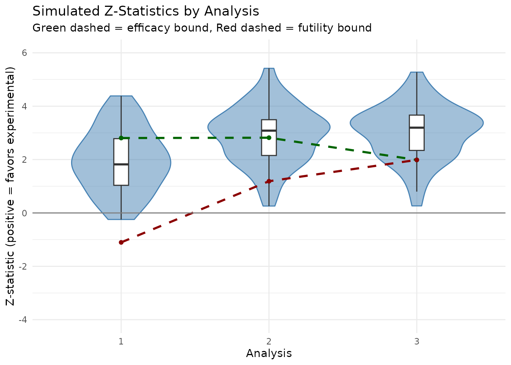

Group sequential design and simulation
Source:vignettes/group-sequential-simulation.Rmd
group-sequential-simulation.RmdThis vignette demonstrates how to create a group sequential design
for negative binomial outcomes using gsNBCalendar() and
simulate the design to confirm design operating characteristics using
nb_sim().
Trial design parameters
We design a trial with the following characteristics:
- Enrollment: 12 months with a constant rate
- Trial Duration: 24 months
-
Analyses:
- Interim 1: 10 months
- Interim 2: 18 months
- Final: 24 months
-
Event Rates:
- Control: 0.125 events per month (1.5 per year)
- Experimental: 0.0833 events per month (1.0 per year; rate ratio = 0.67)
- Dispersion: 0.5
- Power: 90% (beta = 0.1)
- Alpha: 0.025 (one-sided) # event gap: 20 days # dropout rate: 5% at 1 year # max followup: 12 months
Sample size calculation
First, we calculate the required sample size for a fixed design using the Zhu and Lakkis method:
# Sample size calculation
# Enrollment: constant rate over 12 months
# Trial duration: 24 months
event_gap_val <- 20 / 30.4375 # Minimum gap between events is 20 days (approx)
nb_ss <- sample_size_nbinom(
lambda1 = 1.5 / 12, # Control event rate (per month)
lambda2 = 1.0 / 12, # Experimental event rate (per month)
dispersion = 0.5, # Overdispersion parameter
power = 0.9, # 90% power
alpha = 0.025, # One-sided alpha
accrual_rate = 1, # This will be scaled to achieve the target power
accrual_duration = 12, # 12 months enrollment
trial_duration = 24, # 24 months trial
max_followup = 12, # 12 months of follow-up per patient
dropout_rate = -log(0.95) / 12, # 5% dropout rate at 1 year
event_gap = event_gap_val,
method = "zhu" # Zhu and Lakkis sample size method
)
# Print key results
message("Fixed design")
#> Fixed design
nb_ss
#> Sample size for negative binomial outcome
#> ==========================================
#>
#> Method: zhu
#> Sample size: n1 = 182, n2 = 182, total = 364
#> Expected events: 414.1 (n1: 245.9, n2: 168.2)
#> Power: 90%, Alpha: 0.025 (1-sided)
#> Rates: control = 0.1250, treatment = 0.0833 (RR = 0.6667)
#> Dispersion: 0.5000, Avg exposure (calendar): 11.70
#> Avg exposure (at-risk): n1 = 10.81, n2 = 11.09
#> Event gap: 0.66
#> Dropout rate: 0.0043
#> Accrual: 12.0, Trial duration: 24.0
#> Max follow-up: 12.0Group sequential design
Now we convert this a group sequential design with 3 analyses after
10, 18 and 24 months. Note that the final analysis time must be the same
as for the fixed design. The relative enrollment rates will be increased
to increase the sample size as with standard group sequential design
theory. We specify usTime = c(0.1, 0.18, 1) which along
with the sfLinear() spending function will spend 10%, 18%
and 100% of the cumulative
at the 3 planned analyses regardless of the observed statistical
information at each analysis. The interim spending is intended to
achieve a nominal p-value of 0.0025 (one-sided) at both interim
analyses.
# Analysis times (in months)
analysis_times <- c(10, 18, 24)
# Create group sequential design with integer sample sizes
gs_nb <- gsNBCalendar(
x = nb_ss, # Input fixed design for negative binomial
k = 3, # 3 analyses
test.type = 4, # Two-sided asymmetric, non-binding futility
sfu = sfLinear, # Linear spending function for upper bound
sfupar = c(.5, .5), # Identity function
sfl = sfHSD, # HSD spending for lower bound
sflpar = -8, # Conservative futility bound
usTime = c(.1, .18, 1), # Upper spending timing
lsTime = NULL, # Spending based on information
analysis_times = analysis_times # Calendar times in months
) |> gsDesignNB::toInteger() # Round to integer sample sizeTextual group sequential design summary:
print(summary(gs_nb))
#> Asymmetric two-sided with non-binding futility bound group sequential design
#> for negative binomial outcomes, 3 analyses, total sample size 370.0, 90 percent
#> power, 2.5 percent (1-sided) Type I error. Control rate 0.1250, treatment rate
#> 0.0833, risk ratio 0.6667, dispersion 0.5000. Accrual duration 12.0, trial
#> duration 24.0, max follow-up 12.0, event gap 0.66, dropout rate 0.0043, average
#> exposure (calendar) 11.70, (at-risk n1=10.81, n2=11.09). Randomization ratio
#> 1:1. Upper spending: Piecewise linear (line points = 0.5) Lower spending:
#> Hwang-Shih-DeCani (gamma = -8)
#> Asymmetric two-sided with non-binding futility bound group sequential design
#> for negative binomial outcomes, 3 analyses, total sample size 370.0, 90 percent
#> power, 2.5 percent (1-sided) Type I error. Control rate 0.1250, treatment rate
#> 0.0833, risk ratio 0.6667, dispersion 0.5000. Accrual duration 12.0, trial
#> duration 24.0, max follow-up 12.0, event gap 0.66, dropout rate 0.0043, average
#> exposure (calendar) 11.70, (at-risk n1=10.81, n2=11.09). Randomization ratio
#> 1:1. Upper spending: Piecewise linear (line points = 0.5) Lower spending:
#> Hwang-Shih-DeCani (gamma = -8)Tabular summary:
gs_nb |>
gsDesign::gsBoundSummary(
deltaname = "RR",
logdelta = TRUE,
Nname = "Information",
timename = "Month",
digits = 4,
ddigits = 2
) |>
gt() |>
tab_header(
title = "Group Sequential Design Bounds for Negative Binomial Outcome",
subtitle = paste0(
"N = ", ceiling(gs_nb$n_total[gs_nb$k]),
", Expected events = ", round(gs_nb$nb_design$total_events, 1)
)
)| Group Sequential Design Bounds for Negative Binomial Outcome | |||
| N = 370, Expected events = 414.1 | |||
| Analysis | Value | Efficacy | Futility |
|---|---|---|---|
| IA 1: 35% | Z | 2.8070 | -1.1032 |
| Information: 28.96 | p (1-sided) | 0.0025 | 0.8650 |
| Month: 10 | ~RR at bound | 0.5931 | 1.2279 |
| P(Cross) if RR=1 | 0.0025 | 0.1350 | |
| P(Cross) if RR=0.67 | 0.2649 | 0.0005 | |
| IA 2: 79% | Z | 2.8191 | 1.1884 |
| Information: 65.47 | p (1-sided) | 0.0024 | 0.1173 |
| Month: 18 | ~RR at bound | 0.7054 | 0.8632 |
| P(Cross) if RR=1 | 0.0045 | 0.8826 | |
| P(Cross) if RR=0.67 | 0.6910 | 0.0186 | |
| Final | Z | 1.9875 | 1.9875 |
| Information: 82.89 | p (1-sided) | 0.0234 | 0.0234 |
| Month: 24 | ~RR at bound | 0.8036 | 0.8036 |
| P(Cross) if RR=1 | 0.0240 | 0.9760 | |
| P(Cross) if RR=0.67 | 0.9524 | 0.0476 | |
Simulation study
We now simulate 50 trials to evaluate the power of the group sequential design assuming design parameters above are correct.
Simulation setup
set.seed(42)
n_sims <- 50
# Enrollment rate (patients per month) to achieve target sample size
n_target <- ceiling(nb_ss$n_total)
enroll_rate_val <- n_target / 12 # All enrolled in 12 months
# Define enrollment
enroll_rate <- data.frame(
rate = enroll_rate_val,
duration = 12 # 12 months enrollment
)
# Define failure rates (with dispersion)
fail_rate <- data.frame(
treatment = c("Control", "Experimental"),
rate = c(1.5 / 12, 1.0 / 12),
dispersion = c(0.5, 0.5)
)
# Dropout rate (5% at 1 year)
dropout_rate_val <- -log(0.95)
dropout_rate <- data.frame(
treatment = c("Control", "Experimental"),
rate = c(dropout_rate_val, dropout_rate_val),
duration = c(100, 100) # Long duration
)
# Maximum follow-up (trial duration from enrollment start)
max_followup <- 12 # 12 months to match designRun simulations
We use sim_gs_nbinom() to generate data and perform
interim analyses, and check_gs_bound() to apply the group
sequential boundaries.
# Simulate
sim_res <- sim_gs_nbinom(
n_sims = n_sims,
enroll_rate = enroll_rate,
fail_rate = fail_rate,
dropout_rate = dropout_rate,
max_followup = max_followup,
event_gap = event_gap_val,
cuts = lapply(analysis_times, function(x) list(planned_calendar = x)),
design = gs_nb,
n_target = n_target
)
# Apply bounds
results <- check_gs_bound(
sim_results = sim_res,
design = gs_nb,
info_scale = "blinded"
)Simulation results summary
Events and exposure by analysis
# Summarize results
summary_gs <- summarize_gs_sim(results)
summary_gs$analysis_summary |>
gt() |>
tab_header(title = "Summary Statistics by Analysis") |>
cols_label(
analysis = "Analysis",
n_enrolled = "N Enrolled",
events = "Total Events",
info_blinded = "Mean Info (Blinded)",
info_unblinded = "Mean Info (Unblinded)",
n_cross_upper = "N Cross Upper",
n_cross_lower = "N Cross Lower",
prob_cross_upper = "Prob Cross Upper",
prob_cross_lower = "Prob Cross Lower"
) |>
fmt_number(decimals = 2) |>
fmt_number(columns = contains("prob"), decimals = 3)| Summary Statistics by Analysis | |||||||||
| Analysis | N Enrolled | Total Events | Mean Info (Blinded) | Mean Info (Unblinded) | N Cross Upper | N Cross Lower | Prob Cross Upper | Prob Cross Lower | cum_prob_upper |
|---|---|---|---|---|---|---|---|---|---|
| 1.00 | 301.18 | 122.66 | 22.67 | 21.56 | 13.00 | 0.00 | 0.260 | 0.000 | 0.260 |
| 2.00 | 364.00 | 278.88 | 48.10 | 47.02 | 17.00 | 0.00 | 0.340 | 0.000 | 0.600 |
| 3.00 | 364.00 | 311.06 | 51.92 | 50.81 | 13.00 | 7.00 | 0.260 | 0.140 | 0.860 |
Power and Operating Characteristics
# Overall Power
message("=== Overall Operating Characteristics ===")
#> === Overall Operating Characteristics ===
message(sprintf("Number of simulations: %d", summary_gs$n_sim))
#> Number of simulations: 50
message(sprintf("Overall Power (P[reject H0]): %.1f%%", summary_gs$power * 100))
#> Overall Power (P[reject H0]): 86.0%
message(sprintf("Futility Stopping Rate: %.1f%%", summary_gs$futility * 100))
#> Futility Stopping Rate: 14.0%
message(sprintf("Design Power (target): %.1f%%", (1 - gs_nb$beta) * 100))
#> Design Power (target): 90.0%
# Cumulative Power Comparison
crossing_summary <- summary_gs$analysis_summary
crossing_summary$design_cum_power <- cumsum(gs_nb$upper$prob[, 2])
crossing_summary[, c("analysis", "cum_prob_upper", "design_cum_power")] |>
gt() |>
tab_header(title = "Cumulative Power Comparison") |>
cols_label(
analysis = "Analysis",
cum_prob_upper = "Cum Power (Sim)",
design_cum_power = "Cum Power (Design)"
) |>
fmt_number(decimals = 3)| Cumulative Power Comparison | ||
| Analysis | Cum Power (Sim) | Cum Power (Design) |
|---|---|---|
| 1.000 | 0.260 | 0.265 |
| 2.000 | 0.600 | 0.691 |
| 3.000 | 0.860 | 0.952 |
Visualization of Z-statistics
# Prepare data for plotting
plot_data <- results
plot_data$z_flipped <- -plot_data$z_stat # Flip for efficacy direction
# Boundary data
bounds_df <- data.frame(
analysis = 1:gs_nb$k,
upper = gs_nb$upper$bound,
lower = gs_nb$lower$bound
)
ggplot(plot_data, aes(x = factor(analysis), y = z_flipped)) +
geom_violin(fill = "steelblue", alpha = 0.5, color = "steelblue") +
geom_boxplot(width = 0.1, fill = "white", outlier.shape = NA) +
# Draw bounds as lines connecting analyses
geom_line(
data = bounds_df, aes(x = analysis, y = upper, group = 1),
linetype = "dashed", color = "darkgreen", linewidth = 1
) +
geom_line(
data = bounds_df, aes(x = analysis, y = lower, group = 1),
linetype = "dashed", color = "darkred", linewidth = 1
) +
# Draw points for bounds
geom_point(data = bounds_df, aes(x = analysis, y = upper), color = "darkgreen") +
geom_point(data = bounds_df, aes(x = analysis, y = lower), color = "darkred") +
geom_hline(yintercept = 0, color = "gray50") +
labs(
title = "Simulated Z-Statistics by Analysis",
subtitle = "Green dashed = efficacy bound, Red dashed = futility bound",
x = "Analysis",
y = "Z-statistic (positive = favors experimental)"
) +
theme_minimal() +
ylim(c(-4, 6))
Notes
This simulation demonstrates the basic workflow for group sequential designs with negative binomial outcomes:
-
Sample size calculation using
sample_size_nbinom()for a fixed design -
Group sequential design using
gsNBCalendar()to add interim analyses -
Simulation using
nb_sim()to generate trial data -
Analysis using
cut_data_by_date()andmutze_test()at each interim - Boundary checking against the group sequential bounds
The usTime = c(0.1, 0.2, 1) specification provides
conservative alpha spending at early analyses, preserving most of the
Type I error for later analyses when more information is available.
With only 50 simulations, the estimated power has substantial Monte
Carlo error. For more precise estimates, increase n_sims to
1000 or more.